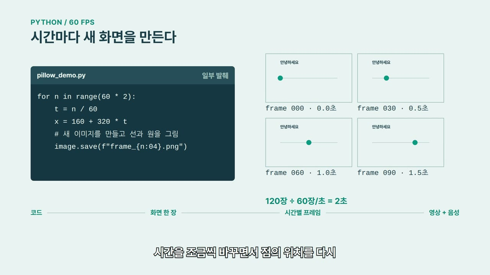
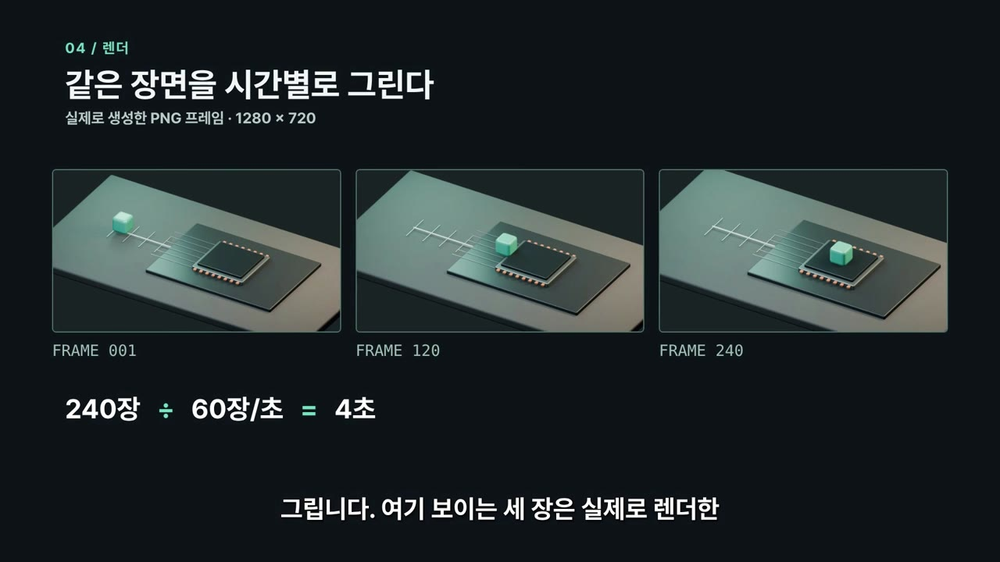
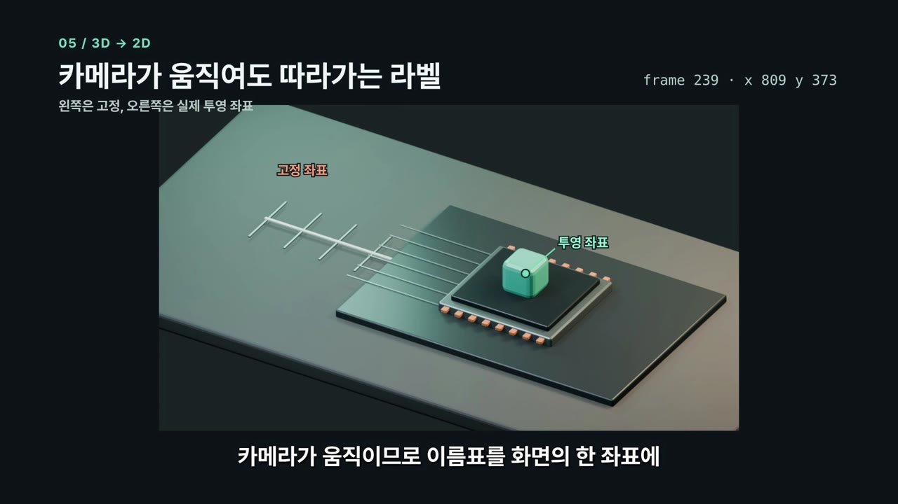
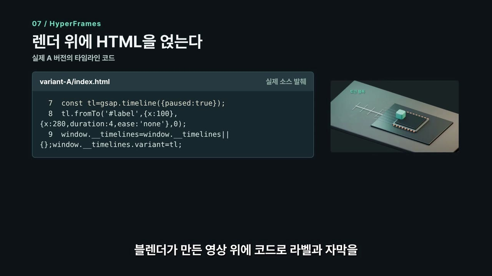
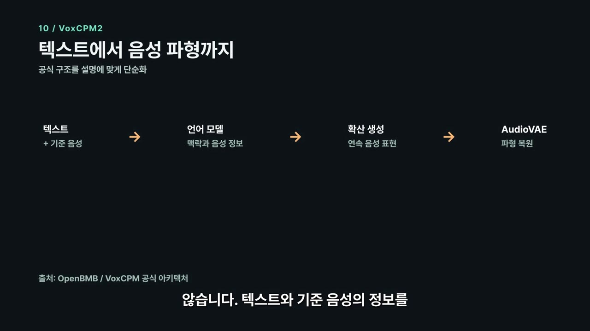
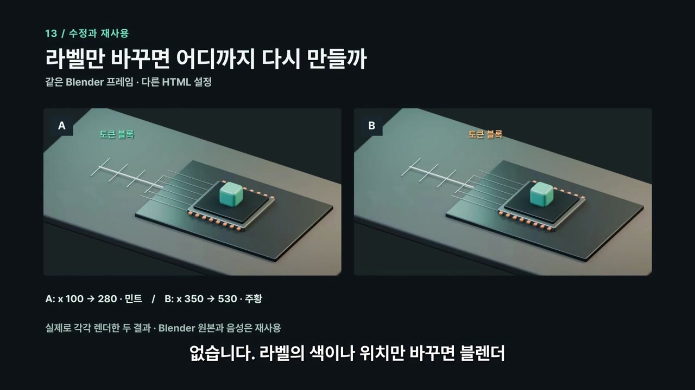

영상 하나가 만들어지기까지
먼저 만들고 싶은 영상을 설명합니다. LLM과 함께 구성과 코드를 정한 뒤, 각 도구로 화면과 음성을 만들고 하나의 영상으로 합칩니다.
영상에 나온 칩과 블록은 설명을 위해 만든 3D 장면입니다. 실제 LLM 내부를 촬영한 화면은 아닙니다.
LLM은 어디에 쓰였을까?
LLM에게 원하는 장면을 설명하면 대본이나 코드를 제안해 줍니다. 도구가 연결돼 있다면 파일을 만들고 실행하는 과정도 도울 수 있습니다.
LLM이 돕는 일
영상의 순서를 짜고 장면에 필요한 코드를 쓰거나, 오류를 보고 수정할 부분을 찾습니다.
실제로 만드는 일
화면을 그리고 영상을 만드는 일은 Blender, HyperFrames, FFmpeg가 맡습니다. 결과가 맞는지는 사람이 살펴봐야 합니다.
코드 작성과 실행이 다른 이유
같은 코드라도 프로그램 버전, 파일 위치, 운영체제와 권한에 따라 실행 결과가 달라질 수 있습니다. 코드뿐 아니라 실행 기록과 결과 파일을 함께 확인해야 합니다.
그림이 영상이 되기까지
먼저 점 하나를 왼쪽에서 오른쪽으로 움직여 봅시다. Pillow와 Pycairo 예제에서는 시간마다 점의 위치를 계산해 그림을 저장했습니다. Manim에는 시작과 끝을 알려 주고 그 사이를 계산하게 했습니다.

한 장씩 들여다보면
예제에서는 초당 60장씩, 2초 동안 총 120장을 만듭니다. 이 그림을 순서대로 빠르게 보여주면 점이 움직이는 것처럼 보입니다.
for n in range(60 * 2):
t = n / 60
x = 160 + 320 * t
# 이미지를 만들고 선과 원을 그린다
image.save(f"frame_{n:04}.png")실제 코드에서 일부만 가져왔습니다.
이 예제에서는 그림을 PNG 파일로 한 장씩 저장했습니다. 다른 도구가 항상 중간 이미지를 파일로 남기는 것은 아닙니다. 각 시각의 화면을 만들어 순서대로 재생한다는 점은 같습니다.
Blender에서는 어떻게 만들었을까?
Blender에서는 Python의 bpy API로 물체와 재질, 조명, 카메라를 설정했습니다. 블록이 움직이는 위치도 코드에 적었습니다.
실제 키프레임 발췌
packet.location = (-3.25, 0, .42) packet.keyframe_insert(data_path='location', frame=1) packet.location = (1.0, 0, .60) packet.keyframe_insert(data_path='location', frame=180) packet.keyframe_insert(data_path='location', frame=240)
1번 프레임에 출발 위치를, 180번 프레임에 도착 위치를 정했습니다. Blender가 그 사이를 계산하고, 240번 프레임까지 도착 위치를 유지합니다.

240장 ÷ 60장/초 = 4초. Blender 원본은 1280×720으로 렌더했고, 최종 영상은 1920×1080입니다.

이름표는 어떻게 따라갈까?
카메라가 움직일 때 이름표를 화면 한자리에 고정하면 블록과 어긋납니다. 그래서 블록의 3D 위치를 카메라에 투영해 프레임마다 화면 좌표를 구했습니다.
HyperFrames로 화면을 합치기
HyperFrames로 Blender 영상 위에 글자와 도형을 얹었습니다. GSAP 타임라인에는 움직임을 적고, 렌더할 때는 시간에 맞춰 화면을 캡처합니다.

한 프레임은 한 시각
초당 60프레임에서 번호를 0부터 세면, n번 프레임은 n / 60초에 해당합니다. 30번은 0.5초, 60번은 1초입니다.
원하는 시각으로 이동했을 때 항상 같은 화면이 나오도록 구성해야 합니다.
목소리와 자막 만들기
목소리는 VoxCPM2로 따로 만들었습니다. 대본과 합성 기준 음성을 넣어 WAV 파일을 생성하고, 별도의 정렬기로 자막 시각을 추정했습니다.
- 대본이나 음성 설정이 바뀌면 영향을 받는 음성을 다시 만듭니다.
- 자막 시각이 맞더라도 발음이 정확한지는 직접 들어봐야 합니다.
- 음성 합성은 네트워크를 분리한 로컬 환경에서 실행했습니다. Codex가 사용하는 LLM의 처리 위치는 이와 별개입니다.

예전 음성이 그대로 남는 경우
대본을 바꿔도 기존 WAV 파일이 있다는 이유로 생성을 건너뛰면 예전 음성이 남을 수 있습니다. 이 프로젝트는 대본·기준 음성·설정 등을 해시로 확인하지만, 모델 가중치 파일 자체의 변경은 감지하지 못합니다.
어디부터 다시 만들까?
항목을 선택하면 이 예제에서 다시 만들 범위를 볼 수 있습니다.

마지막으로 FFmpeg가 영상과 음성을 MP4 파일에 담았습니다. 이때 영상은 H.264, 음성은 AAC로 인코딩했습니다. H.264와 AAC는 압축 방식이고 MP4는 이들을 담는 파일 형식입니다.
자동 검사는 도움이 되지만 내용이 맞는지, 발음이 자연스러운지는 완성본을 직접 보고 들어야 합니다.